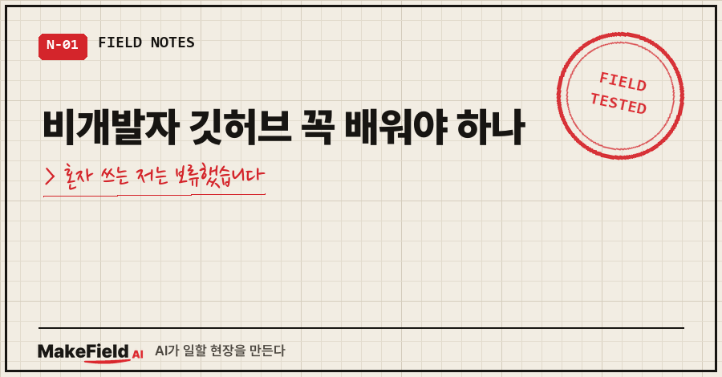
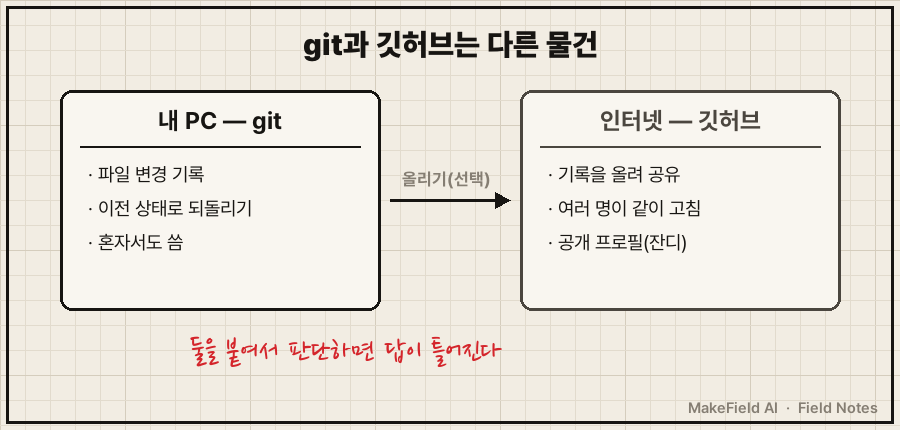
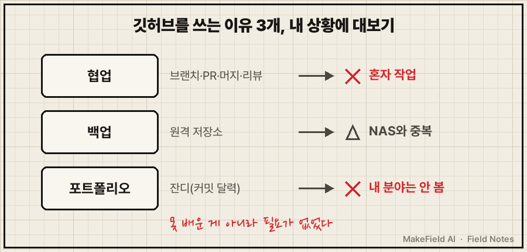
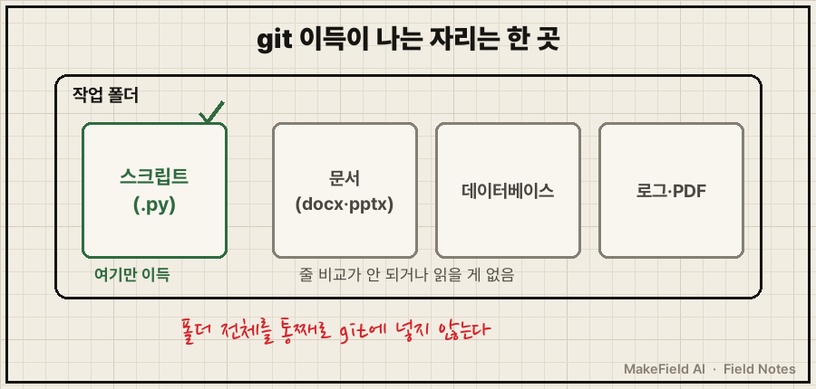

혼자 작업하는 비개발자라면, 깃허브는 지금 당장 배우지 않아도 됩니다. 깃허브 학습량의 대부분은 여러 사람이 같이 코드를 고칠 때 쓰는 기능이라서요. 다만 AI가 내 코드를 고쳐주는 사람이라면 따로 따져볼 자리가 하나 남습니다.
저는 개발자가 아니에요. 공장 설비 쪽에서 15년 일한 엔지니어인데, 지난 1년 동안 AI한테 시켜서 개인 자동화 스크립트를 꽤 많이 쌓았습니다. 기차표 취소표 잡는 것, 매일 공부 자료 뽑아주는 것, 문서 자동으로 만드는 것..
그러다 2026년 9월 어느 날, AI한테 이렇게 물었어요.
내가 깃허브를 쓰면 좋을까? 다들 쓰는데 난 쓸 줄을 모르네솔직히 반쯤은 "배우세요"라는 답을 기대했습니다. 코딩 좀 한다는 사람은 다 깃허브 주소를 갖고 있잖아요. 그런데 돌아온 답은 배우냐 마냐가 아니라, 질문부터 둘로 쪼개는 거였어요.
1. 깃허브랑 git은 같은 건가요
아닙니다. git은 내 PC에서 파일 변경 이력을 기록하는 도구이고, 깃허브는 그 기록을 인터넷에 올려 남과 나누는 서비스예요. 이 둘을 한 덩어리로 놓고 판단하면 답이 틀어진다는 게 AI의 첫마디였습니다.
공식 설명도 그렇게 나눠 둡니다. GitHub 공식 문서는 git을 "파일의 변경을 추적하는 버전 관리 시스템"으로, 깃허브를 "git 프로젝트(저장소)를 클라우드에 올려 두는 곳"으로 설명해요. 깃허브는 git 위에 얹힌 서비스입니다.

저는 여기서 한 번 멈칫했어요. "깃허브를 모른다"고 생각했는데, 정확히는 git이 뭔지도, 깃허브가 뭔지도 구분 못 하고 있었던 거죠.
2. 혼자 쓰는 사람이 깃허브를 쓰는 이유는 뭔가요
사람들이 깃허브를 쓰는 이유는 크게 협업·백업·포트폴리오 세 가지이고, 혼자 일하는 비개발자에게는 셋 다 약했습니다. AI가 이유를 하나씩 꺼내서 제 상황에 대보게 했어요.
| 깃허브를 쓰는 이유 | 제 상황 | 판정 |
|---|---|---|
| 협업 (브랜치·PR·머지·리뷰) | 혼자 작업 | 해당 없음 |
| 백업 | 작업 폴더가 집 NAS로 이미 동기화 중 | 실효는 있지만 중복 |
| 포트폴리오 (잔디) | 개발자 채용에서 보는 신호 | 제 분야 판단자는 안 봄 |
첫 줄에서 머리가 좀 시원해졌습니다. 깃허브 강좌를 열면 나오는 브랜치, 풀 리퀘스트, 머지, 코드 리뷰.. 이게 전부 여러 명이 같은 코드를 동시에 만질 때 쓰는 기능이에요. 저는 그걸 "못 배운 것"이라고 자책했는데, 실은 필요가 없었던 것이었습니다.
세 번째 줄은 AI가 꽤 단호했어요. 잔디(커밋 기록 달력)는 웹·앱 개발자 채용에서 작동하는 신호이고, 제가 일하는 판에서 사람을 보는 사람은 그걸 들여다보지 않는다고요. 기분 좋으라고 "포트폴리오에 도움 돼요"라고 해줄 법도 한데 안 해주더라고요.

여러분도 "다들 쓰니까"로 배우려던 도구가 하나쯤 있지 않으신가요? 이유를 세 줄로만 적어봐도 절반은 정리됩니다.
3. 그럼 비개발자에게 git이 이득인 자리는 어디인가요
AI가 고친 코드를 줄 단위로 보고 되돌려야 하는 자리, 딱 거기입니다. 깃허브는 필요 없어도 git 쪽은 얘기가 달랐어요.
AI가 짚은 시나리오는 이거였습니다. "어제까지 잘 돌던 스크립트가 오늘 깨졌는데, 뭘 건드렸는지 모르겠다." AI한테 코드를 맡기는 사람이면 한 번은 꼭 만나는 장면이죠. 제 작업 폴더 상태를 보면 바로 답이 나옵니다.
Is a git repository: falseAI가 제 폴더를 열 때마다 보는 환경 정보 한 줄이에요. git 저장소가 아니라는 뜻입니다. 그러니까 AI가 제 코드를 어디서 몇 줄 고쳤는지 확인할 수단이 지금은 파일 날짜뿐이에요. 날짜는 "바뀌었다"까지만 알려주지, 어느 줄이 바뀌었는지는 안 알려줍니다.
반대로 git을 써도 이득이 거의 없는 파일도 있었어요.
| 파일 종류 | git 이득 | 이유 |
|---|---|---|
| 파이썬 스크립트 (.py) | 큼 | 줄 단위로 바뀐 곳을 보고 되돌릴 수 있음 |
| 워드·파워포인트·엑셀 | 작음 | 속이 압축된 묶음이라 줄 비교가 안 됨. 이미 _v1, _v2 파일명 + _old 폴더 규칙으로 관리 중 |
| 데이터베이스 파일 | 작음 | 계속 바뀌는 한 덩어리 파일 |
| 대용량 로그·PDF | 작음 | 크고, 비교해도 읽을 게 없음 |

그리고 금지선도 같이 정했습니다. 작업 폴더 전체를 통째로 git에 넣지 않는다. 업무 자료, 개인 자료, 데이터베이스, 대용량 파일이 한 덩어리로 묶여버리거든요. 회사 자료는 비공개 저장소라도 올리지 않는다는 것도 같은 자리에 적어뒀어요.
4. 그래서 깃허브 배웠나요
안 배웠습니다. 폐기가 아니라 보류로 결정했어요. 제가 한 말을 그대로 옮기면 이렇습니다.
굳이 아직 잘 모르겠다. 진짜 필요하면 다시 얘기하자코드도 설정도 하나도 안 바꿨어요. 대신 AI 작업 기록에 "이 건은 사용자가 먼저 꺼낼 때만 다시 연다"는 줄을 남겼습니다. AI는 새 대화마다 '좋아 보이는 것'을 또 권하려는 경향이 있어서, 이렇게 안 적어두면 다음 대화에서 같은 제안이 또 나올 수 있거든요..
돌아보면 이번에 AI가 해준 일은 답을 준 게 아니었어요. "다들 쓴다"라는 압박을 이유 세 개로 쪼개고, 남은 이득 한 자리를 제 폴더에서 찾아준 거죠. 판정은 제가 했습니다.
댓글로 받을 것 같은 질문 둘
Q. 그래도 언젠가는 배워두는 게 좋지 않나요?
필요가 생기는 순간이 오면 그때가 제일 빨리 배워집니다. 저한테 그 순간은 "AI가 고친 코드가 깨졌는데 되돌릴 방법이 없을 때"일 거예요. 그때는 깃허브가 아니라 내 PC의 git부터 볼 생각입니다.
Q. 백업만 하고 싶으면 깃허브가 편하지 않나요?
편할 수 있어요. 다만 저는 작업 폴더가 이미 집 NAS로 동기화되고 있어서 같은 일을 두 번 하게 됩니다. 백업이 아예 없는 분이면 판정이 달라질 수 있어요.
정리하면, 깃허브를 배울지 말지 고민될 때는 협업·백업·포트폴리오 세 줄에 내 상황을 대보고, 셋 다 아니면 "AI가 내 코드를 고치는가" 한 줄만 더 보면 됩니다. 저는 그 한 줄 때문에 git을 보류 목록 맨 위에 올려뒀어요.
다음에 실제로 스크립트가 깨지는 날이 오면, 그날 git을 처음 켜본 기록으로 다시 쓰겠습니다. 이렇게 "안 하기로 한 결정"까지 남겨둔 기록은 makefield.ai에도 따로 모으는 중이에요.
여러분은 혼자 쓰는 코드, 지금 어떤 방법으로 되돌리고 계세요?
태그: #비개발자깃허브 #깃허브필요성 #깃허브혼자 #git과GitHub차이 #버전관리 #깃허브배워야하나 #AI코드되돌리기 #로컬git #개인자동화 #비개발자코딩 #AI코딩 #파이썬자동화 #AI에게일시키기 #AI오답노트 #MakeFieldAI